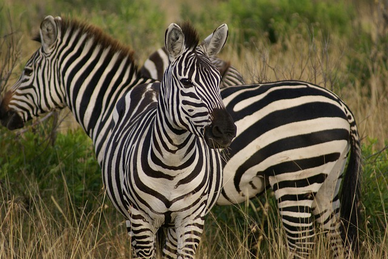
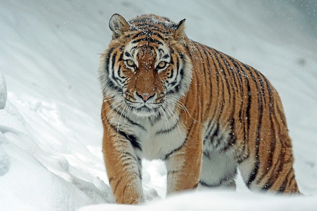

Zebra
Zebra: ssak z rodziny koniowatych charakteryzujący się obecnością białych pasów na czarnej sierści. Zwierzęta te należą do rodzaju konia.
Tygrys
Tygrys: ssak z rodziny kotowatych charakteryzujący się obecnością czarnych pasów na pomarańczowej sierści. Zwierzęta te należą do rodzaju kotów.